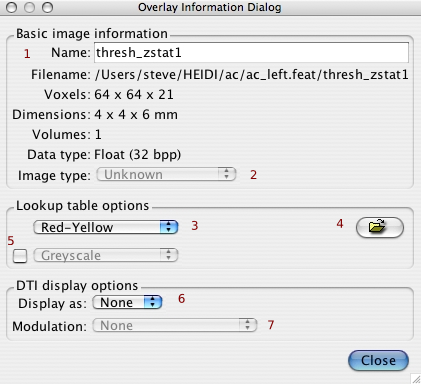

Contents
Image Info
To view information about a layer, select the layer in the Layer List and press the "Layer Info" button .
Note that, once this dialog is showing, you can select other layers via the Layer List and the information dialog will update accordingly.
Basic information

Name:(1) The name of the layer; can be edited, e.g. to disambiguate two layers with the same name.
- Filename: Original filename of layer.
Voxels: 3D image matrix size. Number of voxels in X, Y & Z.
- Dimensions: Dimensions (real-world physical size) of a single voxel.
- Volumes: Length of the image in the 4th dimension, e.g. number of time points.
- Data type: The data type that each voxel intensity is stored in (floating point, integer etc.)
- Image type:(2) Type of image, e.g. z-statistic, not many images have this flag set yet.
Lookup table options
This section controls the greyscale or colour-scale lookup table used(3). The file selector(4) button can be used to load a LUT from disk.
If the second LUT option is activated, by turning on the checkbox(5), then this LUT is applied over negative ranges, and the first LUT is used for the positive values. In this case the bricon controls are set wrt the first LUT and should therefore be positive values (an equivalent inverted range is then used for the second LUT).
DTI display options
The selects DTI image display mode:RGB or Lines(6), for the current layer. Additionally a modulation layer can be selected (7).